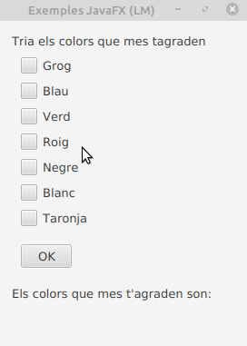

Checkbox forma part del paquet JavaFX. És una casella amb una marca quan està seleccionada i buida quan no està seleccionada. Al principi, les caselles de verificació poden semblar similars als radio Button, però existeix la diferència entre elles que les caselles de verificació no es poden combinar en grups d’alternança, la qual cosa significa que no podem seleccionar diverses opcions al mateix temps.

El checBox pot estar en els següents estats:
Els constructors de la classe són:
Els mètodes més utilitzats són:
El codi fxml del checkbox seria:
<CheckBox fx:id="cbgroc" mnemonicParsing="false" text="Grog">
</CheckBox>